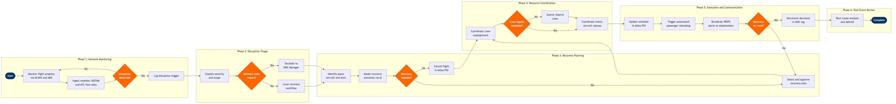

Network Operations Control (NOC)
Flight Operations › Network Operations Control · 18 L4 steps · 6 phases · 10 decision gates · Updated 2026-03-18 22:53
📊
Process Flow Diagram (BPMN)

📋
L4 Process Steps
| Step | Step Name | Role / Swim Lane | System | Input | Output | KPI | Dec? | Exc? |
|---|---|---|---|---|---|---|---|---|
Phase 1 1.1 |
Monitor real-time flight progress network-wide | Network Operations Controller | SITA Airport Management System (AMS) | Live ACARS position reports, gate departure/arrival feeds | Real-time operational picture displayed on NOC wall board | Flight tracking refresh rate ≤60 sec; network visibility ≥99.5% uptime | N | N |
| 1.2 | Ingest weather and ATC flow constraint data | Network Operations Controller | Honeywell GoDirect Weather | METARs, TAFs, SIGMETs, FAA TFMS/SWIM Ground Delay Programs | Weather impact overlay on network map; GDP-affected flight list | Weather advisory ingestion latency ≤5 min from SIGMET issue | N | N |
| 1.3 | Assess airport capacity and slot utilisation | Network Operations Controller | SITA Airport Management System (AMS) | Airport slot allocations, gate availability, ground handler capacity | Slot utilisation report; gate conflict alerts | Gate conflict identification ≥30 min before scheduled pushback | N | Y |
| 1.4 | Detect operational deviation and trigger disruption alert | Network Operations Controller | Cairo AI Disruption Management Platform | Automated threshold breach: delay >15 min, ATC hold, maintenance release flag | Disruption alert ticket with affected flight list and estimated downstream cascade | Alert-to-triage response time ≤10 min for Severity 1 events | Y | N |
Phase 2 2.1 |
Classify disruption severity and operational scope | NOC Duty Manager | Cairo AI Disruption Management Platform | Disruption alert ticket; affected flight count; estimated delay propagation | Severity classification (S1 Network Crisis / S2 Station Event / S3 Single Flight) | Correct severity classification rate ≥95% vs post-event review | Y | N |
| 2.2 | Model downstream cascade impact on network | Network Operations Analyst | Cairo AI Disruption Management Platform | Disruption origin flight; rotational aircraft tail assignments; crew pairings | Cascade impact map: N flights affected, estimated total delay minutes, PAX count at risk | Cascade model produced within 5 min of S1/S2 alert; PAX-at-risk count accuracy ±5% | N | Y |
| 2.3 | Escalate network-wide crisis to senior NOC leadership | NOC Duty Manager | SITA Messaging & Collaboration Platform | S1 severity classification; cascade impact map | Crisis bridge call initiated; senior leadership (VP Operations, VP Maintenance) notified; war room convened | Senior leadership notified within 15 min of S1 classification | Y | N |
Phase 3 3.1 |
Identify available spare aircraft for recovery | Aircraft Routing Controller | Amadeus SkyWORKS | Current fleet status board; maintenance release schedule; spare aircraft positions | Candidate spare aircraft list with position, range capability, and availability window | Spare aircraft identified within 20 min of disruption classification for S1/S2 events | N | Y |
| 3.2 | Model and score recovery scenario options | Network Operations Analyst | Cairo AI Disruption Management Platform | Spare aircraft list; delay propagation model; crew availability matrix | Ranked recovery scenarios with cost, delay, and PAX-impact scores | ≥3 recovery scenarios generated per S1/S2 event; scenario scoring completed within 10 min | Y | N |
| 3.3 | Evaluate crew duty legality for recovery assignments | Crew Scheduling Controller | Jeppesen Crew Management | Proposed recovery flight assignments; crew current duty start times and rest records | Legal/illegal flag per crew pairing; compliant alternatives where required | Zero FAR Part 117 duty-time violations in executed recovery plan; crew legality check completed within 15 min | Y | Y |
| 3.4 | Select and approve final recovery plan | NOC Duty Manager | Cairo AI Disruption Management Platform | Scored recovery scenarios; crew legality validation; cost approval authority | Approved recovery plan with assigned tail numbers, crew, and revised schedule | Recovery plan approved and published within 30 min of S1 disruption onset | Y | N |
Phase 4 4.1 |
Issue crew reassignment instructions to Crew Scheduling | Crew Scheduling Controller | Jeppesen Crew Management | Approved recovery plan; reserve crew roster; current crew positions | Crew reassignment notifications sent via CrewTrac; updated pairing records | Crew contact-and-confirm cycle completed within 20 min; reserve activation rate ≥90% first contact | Y | Y |
| 4.2 | Coordinate aircraft maintenance release with MCC | Maintenance Control Center (MCC) Coordinator | AMOS by Swiss AviationSoftware | Recovery aircraft tail number; open deferred defects (DD) list; MEL status | Maintenance release confirmation or deferred defect deferral decision | Aircraft release decision issued within 30 min of MCC request for non-AOG aircraft | Y | Y |
| 4.3 | Issue gate changes and ground resource reallocation | Station Operations Controller | SITA Airport Management System (AMS) | Revised aircraft routing; gate availability; ground handler and fuelling schedules | Gate reassignment notices; revised ground service orders to handlers | Ground resources confirmed at revised gate ≥45 min before revised departure | N | Y |
Phase 5 5.1 |
Update revised schedule and flight status in Altéa PSS | Network Operations Controller | Amadeus Altéa PSS | Approved recovery plan; revised departure times; aircraft and crew assignments | Updated flight records in Altéa DCS; GDS flight status broadcast via SITA Type B messages | Schedule update published to GDS within 10 min of plan approval; zero discrepancies between Altéa and SITA AMS flight status | N | N |
| 5.2 | Trigger automated passenger rebooking workflow | Passenger Operations Controller | Amadeus Altéa PSS | Cancelled/significantly delayed flights; passenger itinerary records; rebooking rules policy | Automated rebooking confirmations sent to affected PAX via email/SMS; waitlist cleared | ≥85% of disrupted PAX rebooked within 2 hours of cancellation; EU261/DOT delay notification compliance 100% | Y | Y |
| 5.3 | Monitor recovery execution and track plan adherence | NOC Duty Manager | Cairo AI Disruption Management Platform | Real-time departure/arrival feeds; crew sign-in confirmations; maintenance release updates | Recovery tracking dashboard; variance alerts when execution deviates >15 min from plan | Recovery plan adherence ≥80% of revised departure times met within ±15 min; total network delay minutes reduced ≥40% vs no-action baseline | Y | N |
Phase 6 6.1 |
Document NOC event log and decision audit trail | NOC Duty Manager | SITA Messaging & Collaboration Platform | Chronological decision log; communications record; final recovery outcomes | Closed NOC event ticket with full audit trail; regulatory documentation for DOT/CAA if required | Event documentation completed within 4 hours of network recovery; 100% of S1 events produce a formal After-Action Report | N | N |
📋